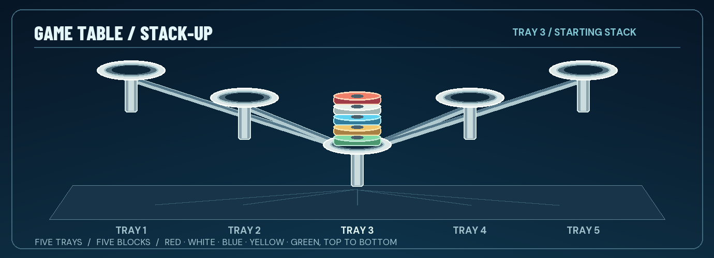

THE GAME SPEAKS
Gyromite and Stack-Up flash their original light commands. A supported emulator observes each rendered frame.
A LITTLE LIGHT. A LOT OF PERSONALITY. / VERSION 0.1.6
The game sends a signal. Buddy makes a move. R.O.B. Vision brings a virtual robot, gyros, and blocks to life beside Gyromite and Stack-Up.
Arduino UNO Q + RetroPie or Batocera + your browser
 PLAYER TWO / READY TO PLAY
PLAYER TWO / READY TO PLAYTHE WHOLE IDEA
Buddy lives on the UNO Q. Open his Mission page on a laptop, tablet, or phone to watch every move and every game piece in real time.
Gyromite and Stack-Up flash their original light commands. A supported emulator observes each rendered frame.
The UNO Q checks the complete command and updates Buddy, his hands, and the pieces on the virtual table.
Watch Buddy move in the browser. In Gyromite, his virtual pad presses can also lower the game’s gates.
TWO CLASSIC MISSIONS
The game stays on your console screen. Buddy's stage lives in your browser, ready for every command.
Two gyros, a spinner, and red and blue pads. Buddy can carry a gyro to a pad while you guide Hector through the gate.
Set up Gyromite
Move among five trays, reach the right height, and carry an ordered stack. The Game Piece view changes as Buddy grips and places blocks.
Set up Stack-Up
THE STORY SO FAR
Buddy was trapped in the dark between game frames. A blink told him to turn. Another told him to lift. Then a little grid of lights appeared beyond the game, and a new window opened.
Read Buddy's storyREADY FOR PLAYER TWO?